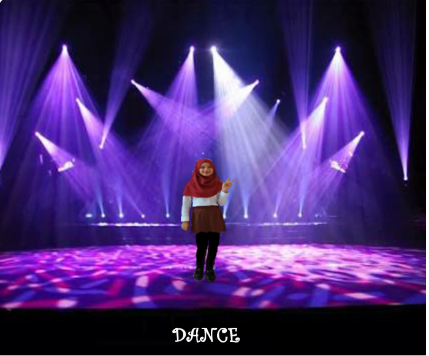
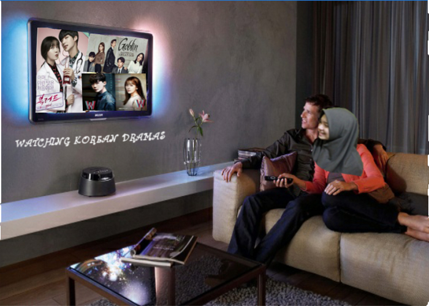
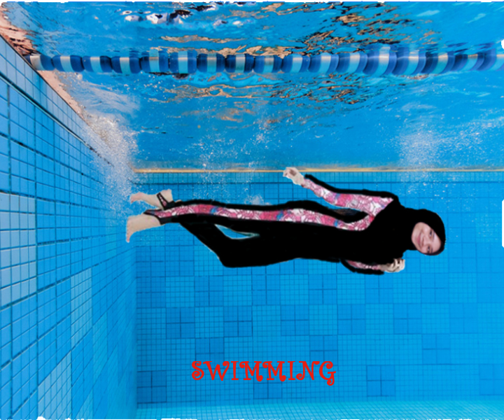

Nama Lengkap : Manish Sonia
Nama Panggilan : Sonia atau manson
Tempat Tanggal Lahir : Bogor, 6 Februari 2001
Jenis Kelamin : Perempuan
Tinggi Badan : 158 cm
Berat Badan : 45 kg
Agama : Islam
Kewarganegaraan : Indonesia
Status : Pelajar
Pendidikan : -Tk.Pertiwi 1 -SDN.Pakuan -SMPN 1 Bogor -SMK-SMAK Bogor
Hobi : Dance cover, renang, nonton drama Korea dan nonton dance practice
Tentangku
Hai, namaku Manish Sonia.Biasanya aku dipanggil Sonia atau Manson.aku adalah anak ke 2 dari 2 bersaaudara,kakakku sekarang sudah bekerja.Aku berumur 17 tahun,yeaayy tapi sayangnya aku belum punya KTP karena belum bikin hehe.Aku lahir di hari Selasa, 6 Februari 2001.Karena aku telah berusia 17 tahun maka aku telah meempuh pendidikan yang cukup panjang.Saat aku berumur 5 tahun aku bersekolah di Tk.Pertiwi 1.Aku menghabiskan banyak waktu disana untuk belajar dan bermain.Aku sangat senang saat itu karena aku memiliki banyak teman untuk bermain.Pelajaran yang paling aku suka di Tk yaitu pelajaran bahasa Inggris karena saat itu guru Bahasa Inggrisku mengajarkan aku dan teman-temanku Bahasa Inggris melalui games di computer.Kemudian di umurku yang ke 7 tahun aku melanjutkan pendidikanku ke SDN Pakuan.Disana aku memiliki banyak teman-teman baru yang memiliki kepribadian yang berbeda-beda.Aku bersekolah disana selama 6 tahun setelah itu aku melanjutkan sekolahku ke SMPN 1 Bogor.Banyak sekali kejadian-Kejadian seru yang telah ku alami disana.Perjalanan hidupku terus berlanjut.Hingga akhirnya aku tiba-tiba berada di SMAKBO.Awalnya si iseng iseng doang ikutan tes masuk SMAKBO.Tapi ternyata lulus.Awalnya SMAKBO bukan sekolah lanjutan yang aku inginkan tapi karena aku males mendaftar ke SMA lain karena banyak teman-teman SMP yang melanjutkan ke sekolah impianku jadi aku memilih untuk bersekolah di SMAKBO dan memiliki banyak teman-teman baru.
Aku memiliki beberapa hobi.Sejak aku mendudukin bangku sd hobiku yaitu berenang.Awalnya aku tidak bisa berenang sama sekali,tetapi setelah aku mengikuti kursus berenang aku jadi semakin suka dengan air.Selain itu aku sangat suka menonton drama Korea karena drama disana sangat menghibur dan episodenya tidak terlalu banyak.Semenjak aku bersekolah di SMP 1 Bogor aku memiliki teman-teman yang sering melihat video dance korea, aku jadi terbawa dan aku jadi suka liat video dance practice.Aku jadi memiliki ketertarikan tersendiri dan lambat laun aku suka memeragakan gerakan dance tersebut.Aku menganggap gerakan gerakan itu terlihat keren sehingga aku menyukainya.Berikut ini adalah foto foto saat aku menjalani hobi-hobiku.
  